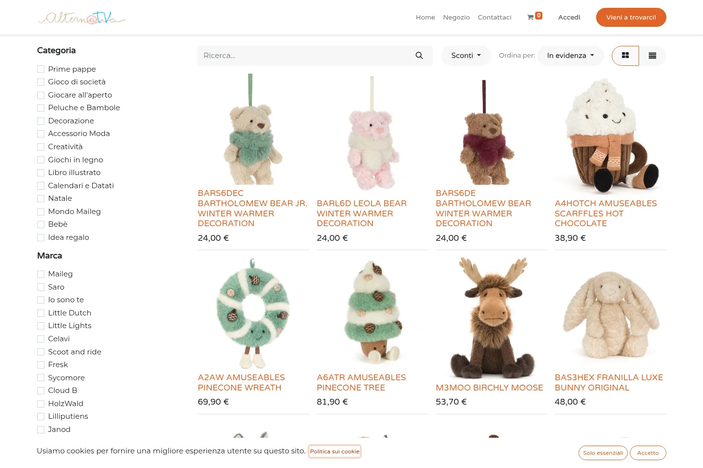

Un catalogo leggibile anche fuori dal negozio
Abbiamo strutturato prodotti e codici a barre in Odoo. Sul sito il cliente può restringere la scelta per categoria, marca ed età, quindi aprire la scheda e acquistare. Al banco lo stesso archivio consente al personale di richiamare il prodotto dalla cassa.

